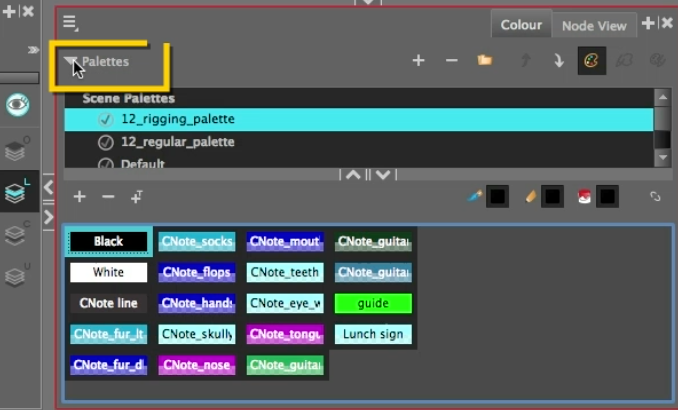

About this Lesson:
In the last lesson you learned how to use deformer tools to make your character flexible and more alive. In this lesson you will be introduced to tips and tricks on:
- Updating colours in the final palette
- Cloning palettes
- Modifying swatches
- Using reference images
- Applying different colour schemes
- Adjusting artwork.
- Adjusting the tail and cajon.
- Creating and applying a gradient swatch.
Lesson Duration: 8 hours
Harmony Topics:
- Replacing a Colour Swatch: Although it is always possible to change colours and textures in existing drawings by updating the swatch in the palette, there may be situations where you want to replace a colour or texture in your drawings with a different colour or texture swatch, without updating the existing swatch. For example, you may want to only replace a colour with a different colour in specific drawings, but not in all the drawings that use the original colour, or you may want to replace a colour with a colour from a different palette without changing your palettes. Using the Recolour Drawing dialog, you can replace all instances of a colour or texture used in your drawings with a different colour or texture swatch. This will actually change the colours or textures from within the drawings, without making any changes to your palette. You can perform this operation on the currently selected drawing, on all drawings in the current layer or in all drawings in your scene.
- Duplicating a Palette: A duplicated palette is a simple copy of the original palette. When you duplicate a palette, the duplicated palette will have the same colour names and values, but will have different colour IDs so that Harmony does not mix it up with its original palette. This is useful when you want to create different palettes for similar models, but want to avoid having to create the palette and its colours all over again. You can just start with your duplicate palette, tweak the colours and add and remove colours as needed.
- Cloning a Palette: Cloning a palette creates an exact copy of the palette, where each colour swatch has the same colour ID as in the original palette, but which you can modify independently afterward. Since painted zones in drawings are associated to their colour by their colour ID, this means that any drawing colored with the original palette can have its colours replaced with the cloned palette's colours just by switching the palette in the scene with the cloned palette.
- Tinting a Palette: You can use the Tint Panel dialog to offset, blend or mix all the different colour swatches in a palette simultaneously. This can be useful if you want to give a cloned palette a different tint, for example to make a night-themed version of a character's master palette.
Task:
-
Download the support files from the Lesson Files.
- Be sure to save your Harmony file as: YourName_Palette in your Documents folder.
-
Watch, complete and take notes on the Animating Cnote part 3 video and Animating Cnote part 4 video tutorials and the topics presented in this lesson. Taking notes in your sketchbook/notebook on how to use Harmony and any animation terminology will help you prepare for your certification exam at the end of this course.
Modifying the Palette and Swatches:
-
Launch Toon Boom Harmony.
- In the Welcome Window, open 14_animate_cnote_pt2
- Take some time to investigate the construction of the Timeline layers and the Node View.
- Before starting, you may want to review your notes from previous lessons.
Hint: Space bar is freehand, 1 is Zoom out and 2 is Zoom in. These shortcuts will help you navigate the Node view.
Part 1 - Changing the Colour Palette and adjusting transparency colours:
You will now learn how to add CNotes' colour into your animation and how to create a live colour palette.
- Go to Colour view and expand the Palette arrow.

- Take note of the existing palettes in this file. Note that when you select a palette the colour swatches will display.
- Select the regular palette, right click and select Move Up. You should notice that CNote has a new colour palette applied in the Camera view. Slide the divider in the image below to compare the palettes.